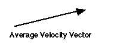

The average velocity is defined as the displacement over
a time interval divided by the duration of the interval. Since displacement
is a vector, so is average velocity. For instance, suppose that the
following is a map of Ozzie's route as he shops at K-mart:

The light line show's Ozzies path from the entry to the check-out stand.
The heavy arrow is his displacement from the entry to the check-out stand.
If Ozzie makes this trip in about 30 minutes (1800 seconds), and the magnitude
of his displacement is 50 m, then his average velocity is

That is, the average velocity is a vector parallel to the displacement
and of length 50 m / 1800 s = 0.028 m/s.
This principle is potentially useful when an object is moving along
any path whatsoever (i.e., it need not be straight) and the sought quantity
is either
-
a displacement
-
an average velocity, or
-
a duration
In particular, the principle can be applied in 3 forms to find an average
velocity:
-
v_x = d_x / t, where v_x and d_x refer to the component along the x-axis
of the vectors, (v and d).
-
v_y = d_y / t, where v_y and d_y refer to the component along the y-axis
of the vectors
-
v = d / t, where v and d refer to the magnitudes of the vectors.
When ojects that are moving in a straight line or a circle, there are specialized
principles that apply to these cases.